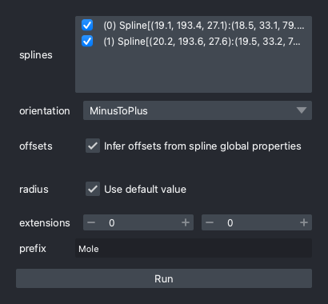
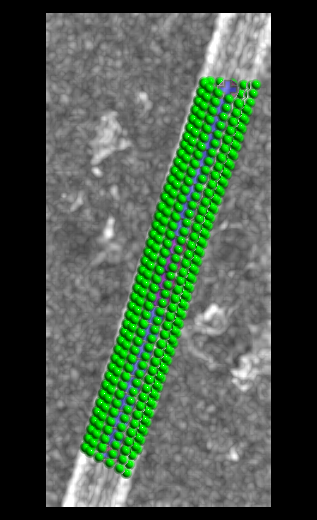
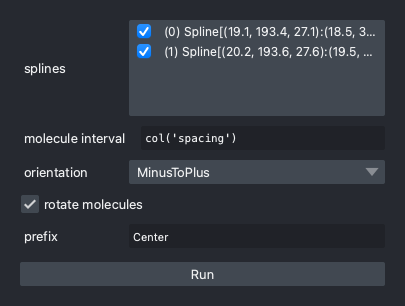
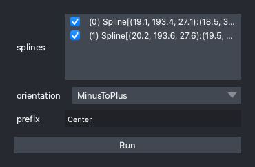
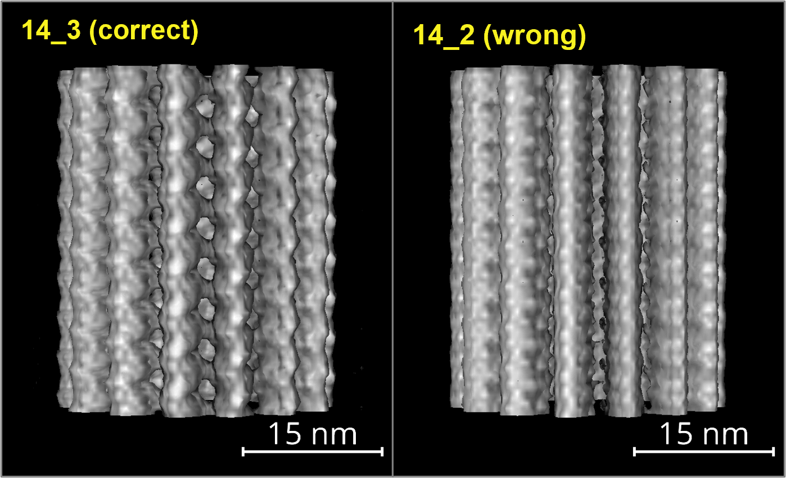
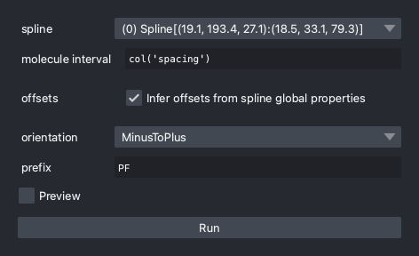

Spline to Molecules
Analysis of tomograms usually starts with placing molecules around densities. What method to be used for this initialization step largely depends on your target; if you have a plausible model of placing and orienting molecules, the task can be solve more efficiently and accurately.
As mentioned in the previous sections, cylindra
can precisely determine the cylindric lattice parameters. These parameters are very
useful for this purpose. For example, lattice spacing tells you in what interval you
should place molecules, and the twist angle indicates how much you should rotate the
coordinates for every molecule.
Note
Following methods are prefixed with map_ but it does not mean these methods are
only for microtubule-associated proteins (MAPs). The "map" here came from the
mathematical term, as each method defines a map \(f\colon \mathbb{R} \to \mathbb{R}^3\)
from the spline coordinate to the world Cartesian coordinate.
Molecules on the Cylinder Surface
API: map_monomers
GUI: Molecules > From/To Splines > Map monomers
This method places molecules on the surface of a cylinder. In most cases, this method will be used to determine the coodinates of monomers, such as:
- Tubulin monomers in microtubules
- G-actin in actin filaments

List of parameters
- In "splines", select which splines you will use for placing molecules.
- "orientation" defines in which direction the molecules will face. The y axis of
the molecule local coordinates will be either parallel or anti-parallel to the
spline tangent vector. If the
"orientation"of the spline is"MinusToPlus"and this parameter is set to"MinusToPlus", the y axis will be parallel to the spline. - "offsets" defines the starting point of the first molecule. If the spline has
global properties
"offset_axial"and"offset_angular", they will be used by default. You don't have to set this parameter in most cases, as you can usealign_averagedto shift the molecules. - "radius" defines the radius of the cylinder. If the spline has global property
"radius", it will be used by default. If the spline has global property"offset_radial", it will be added to the radius. - "extensions" is the number of molecules to be prepended and appended. The spline will be linearly extrapolated to calculate the positions of these molecules.
- "properties to use" defines which properties to be used for placing molecules.
"global": only the global properties will be used. This is the behavior of previous versions ofcylindra."local": local properties will be used to reflect the heterogeneity along the spline."both": both global and local properties will be used. The global properties will be used as the mean values, and the variations of local properties will be applied on top of them.- You can use any molecules-layer name prefix you like by providing the
"prefix"parameter.
Following image shows an example of the result of this operation.

Molecules Along the Spline
Simple Mapping
API: map_along_spline
GUI: Molecules > From/To Splines > Map centers
This method places molecules along the spline. Each molecule will be rotated by the twist angle of the spline. This method will be used for sampling fragments along filaments.

List of parameters
- In "splines", select which splines you will use for placing molecules.
- "molecule interval" defines the distance between molecules. This box evaluates
Python literals and the spline global properties are available using the
colfunction ofpolars. For example, if the"spacing"property is4.05and you set this parameter tocol("spacing") * 2, this input will be evaluated to8.1. For more details, see Expressions. - "orientation" defines in which direction the molecules will face. The y axis of
the molecule local coordinates will be either parallel or anti-parallel to the
spline tangent vector. If the
"orientation"of the spline is"MinusToPlus"and this parameter is set to"MinusToPlus", the y axis will be parallel to the spline. - You can use any molecules-layer name prefix you like by providing the
"prefix"parameter.
Molecules for Cylinders with Helical Symmetry
API: map_along_spline_helical_symmetry
GUI: Molecules > From/To Splines > Map along spline (helical symmetry)
Technically, running this method is almost equivalent to picking molecules on the cylinder surface and translating them back to the spline; thus, you will see a very dense line filled with molecules.

Because molecules are generated based on the cylindric parameters, this method is useful prior to subtomogram averaging to checking if the parameters are correct. For example, if you have a 14_3 microtubule in your tomogram, and global-CFT analysis was successful, you should see a 14_3 helical pattern in the average image. If the parameters are not correct (like 14_2), the protofilament pattern or the lateral interactions will be missing.

Molecules Along a Protofilament
API: map_along_pf
GUI: Molecules > From/To Splines > Map along PF
This method will place a subset of molecules that would be placed by map_monomers. This method will be useful for, for example,
placing molecules along the interface between A- and B-tubules of cilia.

List of parameters
- In "spline", select which spline you will use for placing molecules.
- "molecule interval" defines the distance between molecules. This box evaluates
Python literals and the spline global properties are available using the
colfunction ofpolars. For example, if the"spacing"property is4.05and you set this parameter tocol("spacing") * 2, this input will be evaluated to8.1. For more details, see Expressions. - "offsets" defines the starting point of the first molecule. This is important to define in which protofilament molecules will be placed.
- "orientation" defines in which direction the molecules will face. The y axis of
the molecule local coordinates will be either parallel or anti-parallel to the
spline tangent vector. If the
"orientation"of the spline is"MinusToPlus"and this parameter is set to"MinusToPlus", the y axis will be parallel to the spline. - You can use any molecules-layer name prefix you like by providing the
"prefix"parameter.
Programmatic Access
Molecules as a layer
All the molecules are added to the napari viewer as a MoleculesLayer, a subclass
of the Points layer. In the layer controls, you can adjust how the layer looks, e.g.
color, size, and opacity.
Note
The layer control for MoleculesLayer is different from that of Points layer.
All the layers in napari are stored in the layers attribute. For example, you can
get the layer named "Mole-0" by following code.
# `viewer` is the napari viewer object.
viewer.layers["Mole-0"]
# The `parent_viewer` is the parent napari viewer of the `cylindra` GUI, thun points to
# the same viewer object.
ui.parent_viewer.layers["Mole-0"]
However, the cylindra GUI has another convenient accessor mole_layers that only
considers the MoleculesLayer objects.
layer = ui.mole_layers["Mole-0"] # get the layer named "Mole-0"
# iterate over all the molecules-layer
for layer in ui.mole_layers:
print(layer.name)
Note
Unlike Points layers, MoleculesLayer stores additional components.
- layer.molecules: Molecules object of acryo.
- layer.source_spline: The source spline object which was used to generate the
molecules (if exists). This is a weak reference, so this spline object will be
deleted if you deleted or updated the spline.
Positional coordinates
The positional coordinates (in nanometer) of the molecules can be accessed by the
data attribute as a numpy array, as in the Points layer. This array is identical
to the array returned by the pos property of the Molecules object.
layer = ui.mole_layers["Mole-0"] # get the layer named "Mole-0"
layer.data # or `layer.molecules.pos`
array([[ 18.7135, 187.5845, 40.6184],
[ 23.8331, 188.1172, 39.1194],
...
[ 10.168 , 114.0109, 59.1649],
[ 14.1981, 115.9287, 62.1349]], dtype=float32)
Molecule rotations
The "rotation" of a molecule is defined by the transformation to fit the world z, y, x
axes to the molecule local z, y, x axes. Rotation is represented by a Rotation object of scipy.
Rotation object is stored as the rotator attribute of the Molecules.
ui.mole_layers["Mole-0"].molecules.rotator
<scipy.spatial.transform._rotation.Rotation at XXXXXXX>
Rotation object can be converted to many representations including rotation matrix,
Euler angles, quaternion and rotation vector. You can get these representations by
following methods.
# get the ZXZ-Euler angles in degrees as (N, 3) array
Molecules.euler_angle("ZXZ", degrees=True)
# get the rotation vector (z, y, x) as (N, 3) array
Molecules.rotvec()
# get the Quaternion as (N, 4) array
Molecules.quaternion()
# get the rotation matrix as (N, 3, 3) array
Molecules.matrix()
For more information, see acryo documentation